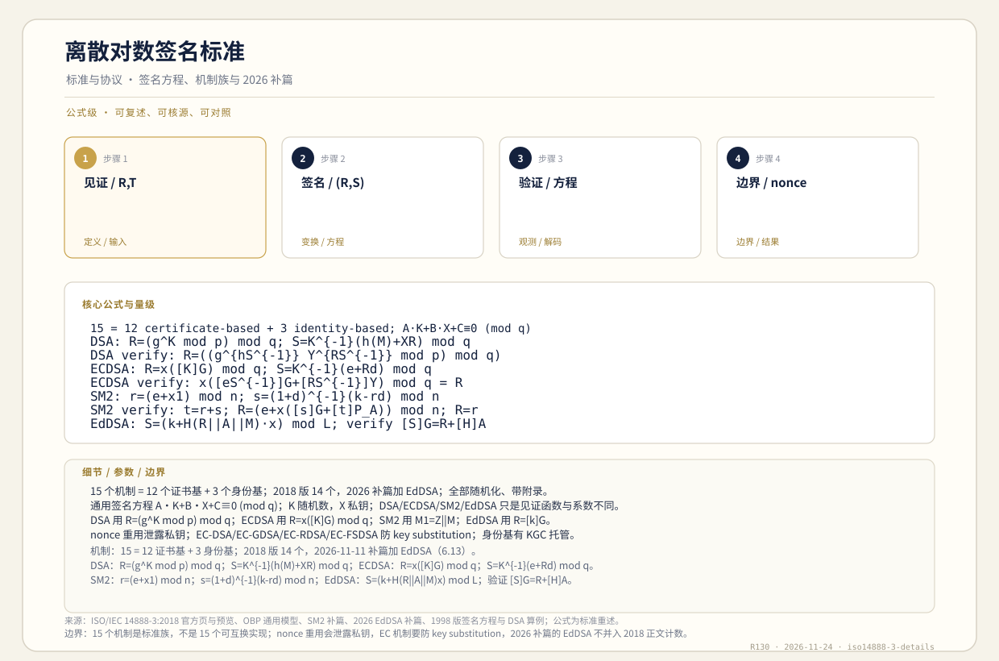
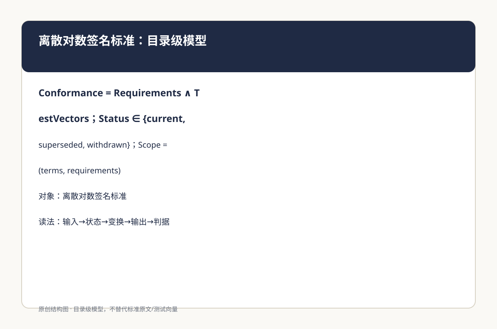

原理与机制
标准：基于离散对数的数字签名（Digital signatures with appendix — Part 3: Discrete logarithm based mechanisms）。ISO/IEC 14888-3:2018 规定基于离散对数问题的带附录签名机制；2018 正文 14 个，2026 年 11 月补篇加入 EdDSA 后为 15 个：12 个证书基 + 3 个身份基。所有机制都是随机化的，签名附在消息后，消息不能被签名“恢复”。通用模型不是“算一个哈希再签”，而是五个步骤：产生随机数 K；算预签名 Π；准备消息 M1/M2；算见证 R（第一段签名）；算 assignment (T1,T2) 与第二段签名 S。通用签名方程是 A·K+B·X+C≡0 (mod q)，其中 X 是私钥，A/B/C 由 (S,T1,T2) 的排列决定。DSA 在乘法群 Z_p* 上，R=(g^K mod p) mod q，S=K^{-1}(h(M)+XR) mod q；验证重算 R。ECDSA 在椭圆曲线点上，R=x([K]G) mod q，S=K^{-1}(e+Rd) mod q。SM2 的 M1=Z||M，Z 绑定身份 ID、曲线参数与公钥；签名 r=(e+x1) mod n，s=(1+d)^{-1}(k-rd) mod n。EdDSA 在 twisted Edwards 曲线上，R=[k]G，S=(k+H(R||A||M)x) mod L。公式化记法：Sig=(R,S)，Verify(pk,M,(R,S))∈{0,1}；标准只给机制，不给实现侧信道防护。

为什么重要
把 14/15 个机制放在一起，价值在于看出“同一个方程、不同群与见证函数”。DSA/ECDSA/SM2/EdDSA 不是四套无关算法：它们都从随机 K 与私钥 X 出发，用一个可验证的方程把 R 与 S 绑定到消息。2018 第四版加入 SM2 与 Chinese IBS；2026 补篇加入 EdDSA，并把 key substitution 注记改写为“可能易受攻击”，说明标准本身不提供该防护。EdDSA 在设计上把公钥 A 绑进哈希，因而自带一层 key-substitution 防护。身份基机制（IBS-1、IBS-2、Chinese IBS）与证书基的信任模型不同：身份基由 KGC 生成私钥，天然带密钥托管；证书基由 CA 认证公钥。公式级必须把这两种信任模型分开写。
应用与实例
实现顺序：1) 选机制与群；2) 校验域参数与公钥；3) 生成私钥 X 与公钥 Y；4) 每条签名用新鲜随机 K；5) 计算 R/S；6) 编码为 DER 或标准附录格式；7) 验证方重算方程并检查 R/S 范围。SM2 还要先算 Z=Hash(ENTL||ID||a||b||x_G||y_G||x_A||y_A)，再算 M1=Z||M；EdDSA 要按 RFC 8032/标准做 Edwards 点编码与 cofactor 处理。身份基要验证 KGC 参数与私钥派生。工程检查：K 是否真随机且唯一；R/S 是否在 [1,q-1]；哈希是否抗碰撞；公钥是否绑进签名或消息；是否做 key-substitution 防护；是否验证证书链/KGC 身份；是否做常数时间实现。

边界与攻击面
nonce 重用是致命错误：同一 K 签两条消息，私钥可由两条 S 方程直接解出。K 偏差、低熵 RNG、故障注入也会泄露私钥。EC-DSA、EC-GDSA、EC-RDSA、EC-FSDSA 可能遭 key substitution：攻击者找两个不同公钥与一个签名，使签名对两者都有效；标准建议把公钥加入被签消息。身份基机制有 KGC 托管，KGC 可生成任意用户的私钥。标准不覆盖侧信道、故障注入、实现 API 误用、签名编码歧义；不提供“签名即安全”的证明。EdDSA 补篇是 2026 年新增，不改变 2018 正文其他机制的计数。
历史与背景
1998 年第一版是证书基，含 DSA 与 Pointcheval/Vaudenay；2006 年第二版重组为离散对数机制，加入 KCDSA、IBS-1、IBS-2；2010 年 Amd 1 加入 SRA、EC-RDSA、EC-SDSA、EC-FSDSA；2016 年第三版；2018 年第四版加入 SM2 与 Chinese IBS，共 14 个；2026 年 11 月 Amd 1 加入 EdDSA，共 15 个。
逐步示例与核验
形式模型与复算步骤
[S=\min_i S_i,\quad S_i\in{\text{密钥强度},\text{分组安全},\text{实现安全}}]
基于离散对数的数字签名的公开参数、密钥/随机数与消息；变量说明：S 为综合安全强度；各分量取最小值，不能只看密钥位数。1.读取标准规定的密钥/分组/模式参数。2.按标准表换算等效强度。3.取最弱分量作为系统强度。边界：公式只覆盖已登记的参数与假设；参数取值、标准版本和实现细节仍以来源为准。
参考出处
- Wikipedia search entry for 基于离散对数的数字签名. https://zh.wikipedia.org/w/index.php?search=%E5%9F%BA%E4%BA%8E%E7%A6%BB%E6%95%A3%E5%AF%B9%E6%95%B0%E7%9A%84%E6%95%B0%E5%AD%97%E7%AD%BE%E5%90%8D
- Handbook of Applied Cryptography (Menezes, van Oorschot, Vanstone). https://www.cacr.math.uwaterloo.ca/hac/